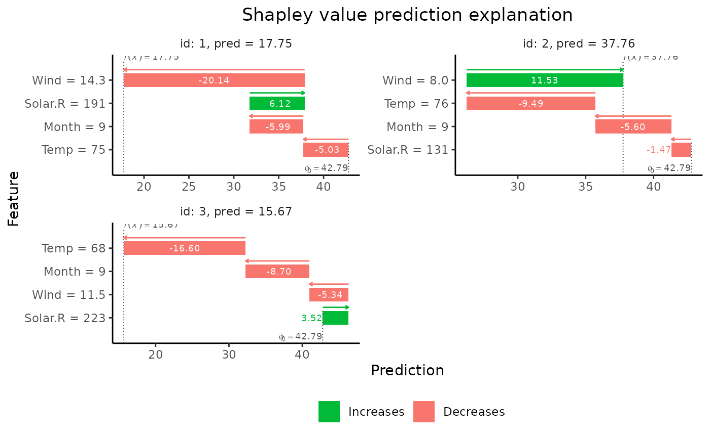

R/explain.R
explain.RdComputes dependence-aware Shapley values for observations in x_explain from the specified
model by using the method specified in approach to estimate the conditional expectation.
explain(
model,
x_explain,
x_train,
approach,
prediction_zero,
n_combinations = NULL,
group = NULL,
n_samples = 1000,
n_batches = NULL,
seed = 1,
keep_samp_for_vS = FALSE,
predict_model = NULL,
get_model_specs = NULL,
timing = TRUE,
...
)The model whose predictions we want to explain.
Run get_supported_models()
for a table of which models explain supports natively. Unsupported models
can still be explained by passing predict_model and (optionally) get_model_specs,
see details for more information.
A matrix or data.frame/data.table. Contains the the features, whose predictions ought to be explained.
Matrix or data.frame/data.table. Contains the data used to estimate the (conditional) distributions for the features needed to properly estimate the conditional expectations in the Shapley formula.
Character vector of length 1 or n_features.
n_features equals the total number of features in the model. All elements should,
either be "gaussian", "copula", "empirical", "ctree", "categorical", "timeseries", or "independence".
See details for more information.
Numeric. The prediction value for unseen data, i.e. an estimate of the expected prediction without conditioning on any features. Typically we set this value equal to the mean of the response variable in our training data, but other choices such as the mean of the predictions in the training data are also reasonable.
Integer.
If group = NULL, n_combinations represents the number of unique feature combinations to sample.
If group != NULL, n_combinations represents the number of unique group combinations to sample.
If n_combinations = NULL, the exact method is used and all combinations are considered.
The maximum number of combinations equals 2^m, where m is the number of features.
List.
If NULL regular feature wise Shapley values are computed.
If provided, group wise Shapley values are computed. group then has length equal to
the number of groups. The list element contains character vectors with the features included
in each of the different groups.
Positive integer. Indicating the maximum number of samples to use in the Monte Carlo integration for every conditional expectation. See also details.
Positive integer (or NULL).
Specifies how many batches the total number of feature combinations should be split into when calculating the
contribution function for each test observation.
The default value is NULL which uses a reasonable trade-off between RAM allocation and computation speed,
which depends on approach and n_combinations.
For models with many features, increasing the number of batches reduces the RAM allocation significantly.
This typically comes with a small increase in computation time.
Positive integer.
Specifies the seed before any randomness based code is being run.
If NULL the seed will be inherited from the calling environment.
Logical.
Indicates whether the samples used in the Monte Carlo estimation of v_S should be returned
(in internal$output)
Function.
The prediction function used when model is not natively supported.
(Run get_supported_models() for a list of natively supported
models.)
The function must have two arguments, model and newdata which specify, respectively, the model
and a data.frame/data.table to compute predictions for. The function must give the prediction as a numeric vector.
NULL (the default) uses functions specified internally.
Can also be used to override the default function for natively supported model classes.
Function.
An optional function for checking model/data consistency when model is not natively supported.
(Run get_supported_models() for a list of natively supported
models.)
The function takes model as argument and provides a list with 3 elements:
Character vector with the names of each feature.
Character vector with the classes of each features.
Character vector with the levels for any categorical features.
If NULL (the default) internal functions are used for natively supported model classes, and the checking is
disabled for unsupported model classes.
Can also be used to override the default function for natively supported model classes.
Logical.
Whether the timing of the different parts of the explain() should saved in the model object.
Arguments passed on to setup_approach.empirical, setup_approach.independence, setup_approach.gaussian, setup_approach.copula, setup_approach.ctree, setup_approach.categorical, setup_approach.timeseries
empirical.typeCharacter. (default = "fixed_sigma")
Should be equal to either "independence","fixed_sigma", "AICc_each_k" "AICc_full".
TODO: Describe better what the methods do here.
empirical.etaNumeric. (default = 0.95)
Needs to be 0 < eta <= 1.
Represents the minimum proportion of the total empirical weight that data samples should use.
If e.g. eta = .8 we will choose the K samples with the largest weight so that the sum of the weights
accounts for 80\
eta is the \(\eta\) parameter in equation (15) of Aas et al (2021).
empirical.fixed_sigmaPositive numeric scalar. (default = 0.1)
Represents the kernel bandwidth in the distance computation used when conditioning on all different combinations.
Only used when empirical.type = "fixed_sigma"
empirical.n_samples_aiccPositive integer. (default = 1000)
Number of samples to consider in AICc optimization.
Only used for empirical.type is either "AICc_each_k" or "AICc_full".
empirical.eval_max_aiccPositive integer. (default = 20)
Maximum number of iterations when optimizing the AICc.
Only used for empirical.type is either "AICc_each_k" or "AICc_full".
empirical.start_aiccNumeric. (default = 0.1)
Start value of the sigma parameter when optimizing the AICc.
Only used for empirical.type is either "AICc_each_k" or "AICc_full".
empirical.cov_matNumeric matrix. (Optional, default = NULL)
Containing the covariance matrix of the data generating distribution used to define the Mahalanobis distance.
NULL means it is estimated from x_train.
internalNot used.
gaussian.muNumeric vector. (Optional)
Containing the mean of the data generating distribution.
NULL means it is estimated from the x_train.
gaussian.cov_matNumeric matrix. (Optional)
Containing the covariance matrix of the data generating distribution.
NULL means it is estimated from the x_train.
ctree.mincriterionNumeric scalar or vector. (default = 0.95) Either a scalar or vector of length equal to the number of features in the model. Value is equal to 1 - \(\alpha\) where \(\alpha\) is the nominal level of the conditional independence tests. If it is a vector, this indicates which value to use when conditioning on various numbers of features.
ctree.minsplitNumeric scalar. (default = 20) Determines minimum value that the sum of the left and right daughter nodes required for a split.
ctree.minbucketNumeric scalar. (default = 7) Determines the minimum sum of weights in a terminal node required for a split
ctree.sampleBoolean. (default = TRUE)
If TRUE, then the method always samples n_samples observations from the leaf nodes (with replacement).
If FALSE and the number of observations in the leaf node is less than n_samples,
the method will take all observations in the leaf.
If FALSE and the number of observations in the leaf node is more than n_samples,
the method will sample n_samples observations (with replacement).
This means that there will always be sampling in the leaf unless
sample = FALSE AND the number of obs in the node is less than n_samples.
categorical.joint_prob_dtData.table. (Optional)
Containing the joint probability distribution for each combination of feature
values.
NULL means it is estimated from the x_train and x_explain.
categorical.epsilonNumeric value. (Optional)
If joint_probability_dt is not supplied, probabilities/frequencies are
estimated using x_train. If certain observations occur in x_train and NOT in x_explain,
then epsilon is used as the proportion of times that these observations occurs in the training data.
In theory, this proportion should be zero, but this causes an error later in the Shapley computation.
timeseries.fixed_sigma_vecNumeric. (Default = 2) Represents the kernel bandwidth in the distance computation. TODO: What length should it have? 1?
timeseries.boundsNumeric vector of length two. (Default = c(NULL, NULL)) If one or both of these bounds are not NULL, we restrict the sampled time series to be between these bounds. This is useful if the underlying time series are scaled between 0 and 1, for example.
Object of class c("shapr", "list"). Contains the following items:
data.table with the estimated Shapley values
List with the different parameters, data and functions used internally
Numeric vector with the predictions for the explained observations.
shapley_values is a data.table where the number of rows equals
the number of observations you'd like to explain, and the number of columns equals m +1,
where m equals the total number of features in your model.
If shapley_values[i, j + 1] > 0 it indicates that the j-th feature increased the prediction for
the i-th observation. Likewise, if shapley_values[i, j + 1] < 0 it indicates that the j-th feature
decreased the prediction for the i-th observation.
The magnitude of the value is also important to notice. E.g. if shapley_values[i, k + 1] and
shapley_values[i, j + 1] are greater than 0, where j != k, and
shapley_values[i, k + 1] > shapley_values[i, j + 1] this indicates that feature
j and k both increased the value of the prediction, but that the effect of the k-th
feature was larger than the j-th feature.
The first column in dt, called none, is the prediction value not assigned to any of the features
(\(\phi\)0).
It's equal for all observations and set by the user through the argument prediction_zero.
The difference between the prediction and none is distributed among the other features.
In theory this value should be the expected prediction without conditioning on any features.
Typically we set this value equal to the mean of the response variable in our training data, but other choices
such as the mean of the predictions in the training data are also reasonable. explain()
explain()
The most important thing to notice is that shapr has implemented six different
approaches for estimating the conditional distributions of the data, namely "empirical",
"gaussian", "copula", "ctree", "categorical", "timeseries", and "independence".
In addition, the user also has the option of combining the different approaches.
E.g., if you're in a situation where you have trained a model that consists of 10 features,
and you'd like to use the "gaussian" approach when you condition on a single feature,
the "empirical" approach if you condition on 2-5 features, and "copula" version
if you condition on more than 5 features this can be done by simply passing
approach = c("gaussian", rep("empirical", 4), rep("copula", 5)). If
"approach[i]" = "gaussian" means that you'd like to use the "gaussian" approach
when conditioning on i features.
For approach="ctree", n_samples corresponds to the number of samples
from the leaf node (see an exception related to the sample argument).
For approach="empirical", n_samples is the \(K\) parameter in equations (14-15) of
Aas et al. (2021), i.e. the maximum number of observations (with largest weights) that is used, see also the
empirical.eta argument.
Aas, K., Jullum, M., & L<U+00F8>land, A. (2021). Explaining individual predictions when features are dependent: More accurate approximations to Shapley values. Artificial Intelligence, 298, 103502.
# Load example data
data("airquality")
airquality <- airquality[complete.cases(airquality), ]
x_var <- c("Solar.R", "Wind", "Temp", "Month")
y_var <- "Ozone"
# Split data into test- and training data
data_train <- head(airquality, -3)
data_explain <- tail(airquality, 3)
x_train <- data_train[, x_var]
x_explain <- data_explain[, x_var]
# Fit a linear model
lm_formula <- as.formula(paste0(y_var, " ~ ", paste0(x_var, collapse = " + ")))
model <- lm(lm_formula, data = data_train)
# Explain predictions
p <- mean(data_train[, y_var])
# Empirical approach
explain1 <- explain(
model = model,
x_explain = x_explain,
x_train = x_train,
approach = "empirical",
prediction_zero = p,
n_samples = 1e2
)
#> Setting parameter 'n_batches' to 2 as a fair trade-off between memory consumption and computation time.
#> Reducing 'n_batches' typically reduces the computation time at the cost of increased memory consumption.
# Gaussian approach
explain2 <- explain(
model = model,
x_explain = x_explain,
x_train = x_train,
approach = "gaussian",
prediction_zero = p,
n_samples = 1e2
)
#> Setting parameter 'n_batches' to 10 as a fair trade-off between memory consumption and computation time.
#> Reducing 'n_batches' typically reduces the computation time at the cost of increased memory consumption.
# Gaussian copula approach
explain3 <- explain(
model = model,
x_explain = x_explain,
x_train = x_train,
approach = "copula",
prediction_zero = p,
n_samples = 1e2
)
#> Setting parameter 'n_batches' to 10 as a fair trade-off between memory consumption and computation time.
#> Reducing 'n_batches' typically reduces the computation time at the cost of increased memory consumption.
# ctree approach
explain4 <- explain(
model = model,
x_explain = x_explain,
x_train = x_train,
approach = "ctree",
prediction_zero = p,
n_samples = 1e2
)
#> Setting parameter 'n_batches' to 10 as a fair trade-off between memory consumption and computation time.
#> Reducing 'n_batches' typically reduces the computation time at the cost of increased memory consumption.
# Combined approach
approach <- c("gaussian", "gaussian", "empirical", "empirical")
explain5 <- explain(
model = model,
x_explain = x_explain,
x_train = x_train,
approach = approach,
prediction_zero = p,
n_samples = 1e2
)
#> Setting parameter 'n_batches' to 2 as a fair trade-off between memory consumption and computation time.
#> Reducing 'n_batches' typically reduces the computation time at the cost of increased memory consumption.
# Print the Shapley values
print(explain1$shapley_values)
#> none Solar.R Wind Temp Month
#> 1: 42.78704 6.124296 -20.137653 -5.033967 -5.987303
#> 2: 42.78704 -1.470838 11.525868 -9.487924 -5.597657
#> 3: 42.78704 3.524599 -5.335059 -16.599988 -8.703929
# Plot the results
if (requireNamespace("ggplot2", quietly = TRUE)) {
plot(explain1)
plot(explain1, plot_type = "waterfall")
}

# Group-wise explanations
group_list <- list(A = c("Temp", "Month"), B = c("Wind", "Solar.R"))
explain_groups <- explain(
model = model,
x_explain = x_explain,
x_train = x_train,
group = group_list,
approach = "empirical",
prediction_zero = p,
n_samples = 1e2
)
#> Setting parameter 'n_batches' to 2 as a fair trade-off between memory consumption and computation time.
#> Reducing 'n_batches' typically reduces the computation time at the cost of increased memory consumption.
print(explain_groups$shapley_values)
#> none A B
#> 1: 42.78704 -11.63856 -13.396062
#> 2: 42.78704 -10.36824 5.337683
#> 3: 42.78704 -25.79874 -1.315633